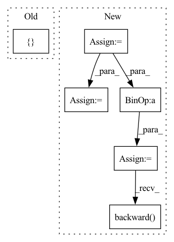

Pattern ID :6988
Before Change
outputs = self.model(data)
loss = self.loss(outputs, labels)
shared_grads += [ torch.autograd.grad(loss, self.model.parameters())After Change
buffer.copy_(server_state.to(**self.setup))
optimizer = torch.optim.SGD(self.model.parameters(), lr=self.local_learning_rate)
seen_data_idx = 0
for step in range(self.num_local_updates):
data = user_data[seen_data_idx: seen_data_idx + self.num_data_per_local_update_step]
labels = user_labels[seen_data_idx: seen_data_idx + self.num_data_per_local_update_step]
seen_data_idx += self.num_data_per_local_update_step
seen_data_idx = seen_data_idx % self.num_data_points
optimizer.zero_grad()
// Compute the forward pass
outputs = self.model(data)
loss = self.loss(outputs, labels)
loss.backward()
optimizer.step()
// Share differential to server version:
// This is equivalent to sending the new stuff and letting the server do it, but in lineIn pattern: SUPERPATTERN
Frequency: 3
Non-data size: 6
Instances Fragment ID: 23315139
Project Name: jonasgeiping/breaching
Commit Name: 1ab2867fea20551797c9aea8ae67099093ec7180
Time: 2021-10-01
Author: jonas.geiping@googlemail.com
File Name: breaching/cases/users.py
M Class Name: UserMultiStep
N Class Name: UserMultiStep
M Method Name: compute_local_updates(2)
N Method Name: compute_local_updates(2)
M Parent Class: UserSingleStep
N Parent Class: UserSingleStep
M File Name: breaching/cases/users.py
N File Name: breaching/cases/users.py
M Start Line: 151
M End Line: 187
N Start Line: 158
N End Line: 200
Before Change
self.tot_update_count += 1
return {
"loss/v": v_loss_value,
"loss/policy": policy_loss_value,
"info/entropy": entropy_val,
"info/kl_div":approx_kl
}
def select_action(self, state, evaluate=False):
if type(state) != torch.tensor:
state = torch.FloatTensor([state]).to(util.device)After Change
//entropy loss
entropy_loss = -torch.mean(-new_log_pi) * self.entropy_coeff
entropy_loss_value = entropy_loss.item()
//compute policy loss
if self.policy_loss_type == "clipped_surrogate":
surrogate1 = advantages * ratio_batch
//print(self.clip_range, advantages.shape, ratio_batch.shape)
surrogate2 = advantages * torch.clamp(ratio_batch, 1 - self.clip_range, 1 + self.clip_range)
min_surrogate = - torch.min(surrogate1, surrogate2)
policy_loss = min_surrogate.mean()
elif self.policy_loss_type == "naive":
raise NotImplementedError
elif self.policy_loss_type == "adaptive_kl":
raise NotImplementedError
policy_loss_value = policy_loss.detach().cpu().numpy()
tot_policy_loss = policy_loss + self.entropy_coeff * entropy_loss
self.policy_optimizer.zero_grad()
tot_policy_loss.backward()
self.policy_optimizer.step()
//compute value loss
v_loss = F.mse_loss(curr_state_v, future_return_batch) Fragment ID: 23315159
Project Name: x35f/unstable_baselines
Commit Name: f41e2cf788d0214add3fb342aee698910c63e651
Time: 2021-04-01
Author: 1621322691@qq.com
File Name: ppo/model.py
M Class Name: PPOAgent
N Class Name: PPOAgent
M Method Name: update(2)
N Method Name: update(2)
M Parent Class: BaseAgent,torch.nn.Module
N Parent Class: BaseAgent,torch.nn.Module
M File Name: ppo/model.py
N File Name: ppo/model.py
M Start Line: 83
M End Line: 126
N Start Line: 79
N End Line: 137
Before Change
self.tot_update_count += 1
return {
"loss/v": v_loss_value,
"loss/policy": policy_loss_value,
}
def select_action(self, state, evaluate=False):
if type(state) != torch.tensor:
state = torch.FloatTensor([state]).to(util.device)After Change
policy_loss_value = policy_loss.detach().cpu().numpy()
//entropy loss
entropy_loss = -torch.mean(dist_entropy)
entropy_loss_value = entropy_loss.detach().cpu().numpy()
tot_loss = v_loss + entropy_loss + policy_loss
self.policy_optimizer.zero_grad()
self.v_optimizer.zero_grad()
tot_loss.backward()
self.policy_optimizer.step()
self.v_optimizer.step()
self.tot_update_count += 1 Fragment ID: 23315108
Project Name: x35f/unstable_baselines
Commit Name: 5af9f89c6d399a424b451a524af66c97ab900df8
Time: 2021-03-30
Author: 1621322691@qq.com
File Name: ppo/model.py
M Class Name: PPOAgent
N Class Name: PPOAgent
M Method Name: update(2)
N Method Name: update(2)
M Parent Class: BaseAgent,torch.nn.Module
N Parent Class: BaseAgent,torch.nn.Module
M File Name: ppo/model.py
N File Name: ppo/model.py
M Start Line: 78
M End Line: 118
N Start Line: 79
N End Line: 125